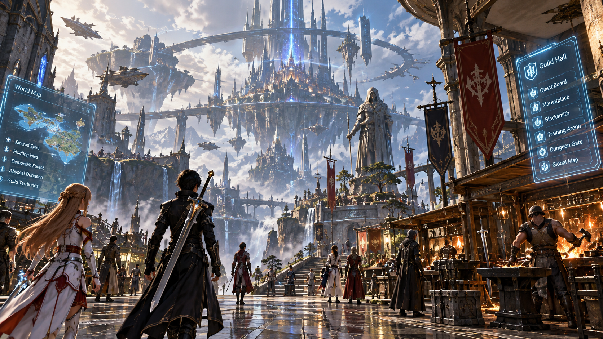

Meaningful roles
Different class identities contribute to a shared world in different ways.
ORIGINAL DARK FANTASY MMORPG CONCEPT
Your legacy is what the world remembers.
A persistent fantasy world where warriors, mages and forgers shape their own paths—and where the greatest threat demands more than strength alone.
ENTER THE WORLD OF DEMONKLIN
Watch the cinematic concept trailer for DemonKlin. This is concept footage, not captured gameplay.
DemonKlin is an ambitious dark fantasy MMORPG concept built around a simple promise: your role in the world should matter.
Explore dangerous lands, face formidable bosses, gather rare resources, craft and trade equipment, and cooperate with other players. Combat is only one way to build a legacy. The hands that forge a weapon can change a hero’s fate just as surely as the hands that wield it.
The long-term vision is a persistent world that can grow over time. The first development milestone is deliberately smaller: prove the core experience before expanding the world.
Different class identities contribute to a shared world in different ways.
Gathering, crafting, repair and trade support a connected economy.
Start with a focused playable region; grow only when the foundations work.
Your power is what you build.
Your legacy is what the world remembers.
Combat, magic and craftsmanship are designed as distinct contributions to the same ecosystem.
THE FRONT LINE
Stand against the dangers beyond the walls. Warriors take on formidable enemies, protect allies and push into increasingly dangerous encounters.
THE ARCANE PATH
Harness powerful magic and bring a different tactical identity to dangerous expeditions and cooperative encounters.
THE HAND THAT BUILDS
Master crafting, repairs, research and commerce. Forgers support the wider world through expertise and economic contribution rather than boss combat.
Class identities describe the current design vision; detailed mechanics remain subject to prototyping and iteration.

BEYOND THE KNOWN FRONTIER
The world begins with a settlement, the wilderness beyond it, and a threat powerful enough to bring heroes together. The larger universe is a long-term ambition—not a promise of the first playable build.
See the first milestone ↗THE NAME SPOKEN IN THE FORGE
A looming force at the heart of the concept. The first prototype is intended to test a single memorable boss encounter—its atmosphere, challenge, and the cooperation required to face it.
The proposed prototype is a focused feasibility milestone—not a claim that a playable game already exists.
A central safe area that establishes the world’s tone and core player loop.
A compact exploration space for gathering, discovery and encounter setup.
Test early Warrior, Mage and Forger loops and how their roles complement one another.
Test a memorable encounter, basic item creation, and an initial trading loop.
Evaluate persistence, synchronization, scope and technical risks before further investment.
Scope discipline: a larger modern-era world, extensive content, final economy balancing and full live-service operations are outside the initial prototype scope.
INDEPENDENT CREATOR
Nagpur, India
DemonKlin is an original game concept being developed independently, with the aim of finding the right development partner to validate and build its first playable prototype.
My background spans software development, AI application concepts, digital products and operational systems. I am seeking collaboration to bring the game’s creative vision into a technically grounded production plan.
Concept / pre-production. This page presents the vision and proposed prototype scope. Concept visuals are illustrative and are not screenshots from a playable game.